Le Jekyll's Barbier, barbier traditionnel à Trois-Rivières
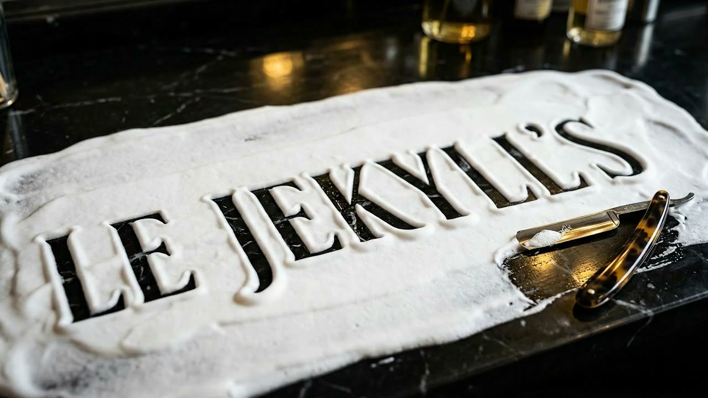
Chad, maître barbier
L’essence du barbier traditionnel
Une seule chaise. Un seul barbier. Une confiance durable.
Plus d’une décennie d’expérience et une maîtrise absolue du coupe-chou. Expertise suprême du Skin Fade et coupes actuelles. Chad perpétue le grand rasage traditionnel. Depuis 2015.
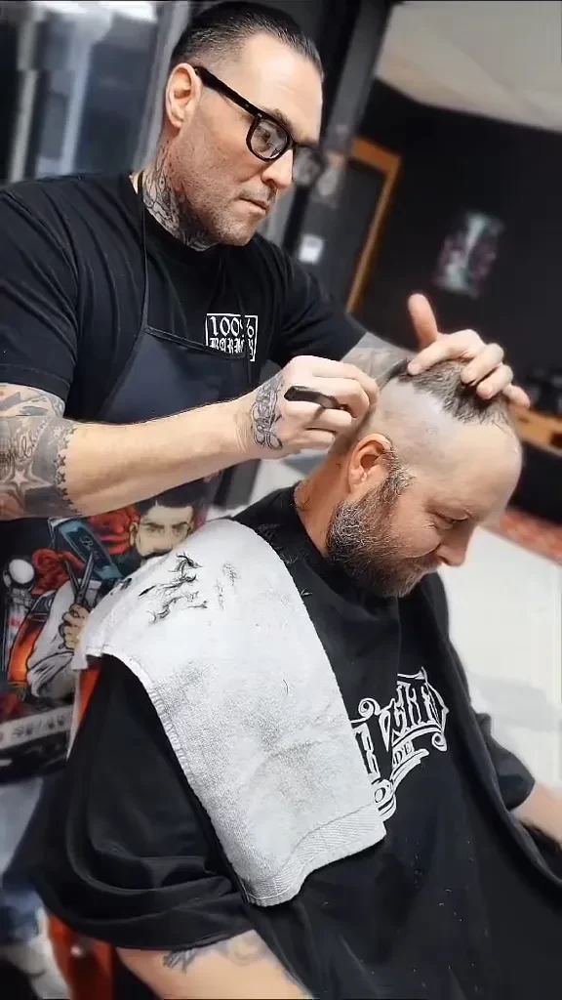
Le poste de Chad et son miroir
Le même visage. La même attention. Le même savoir-faire.
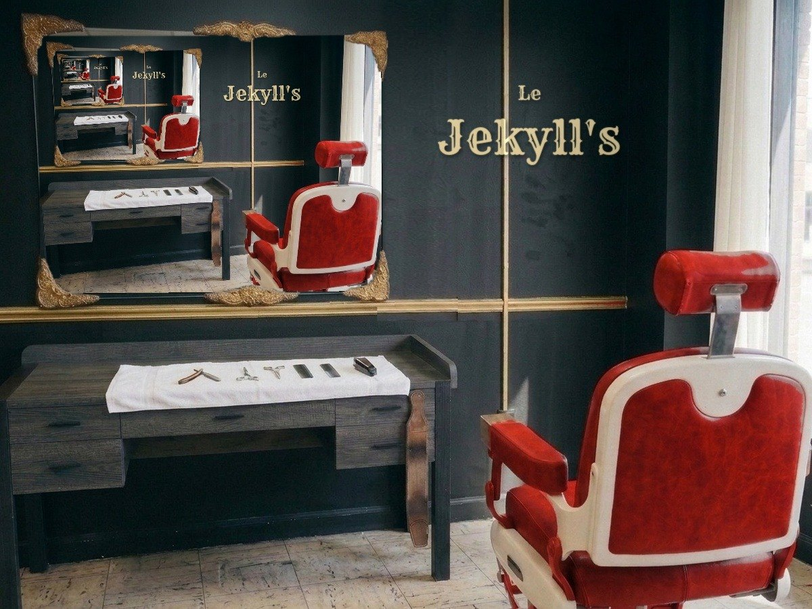
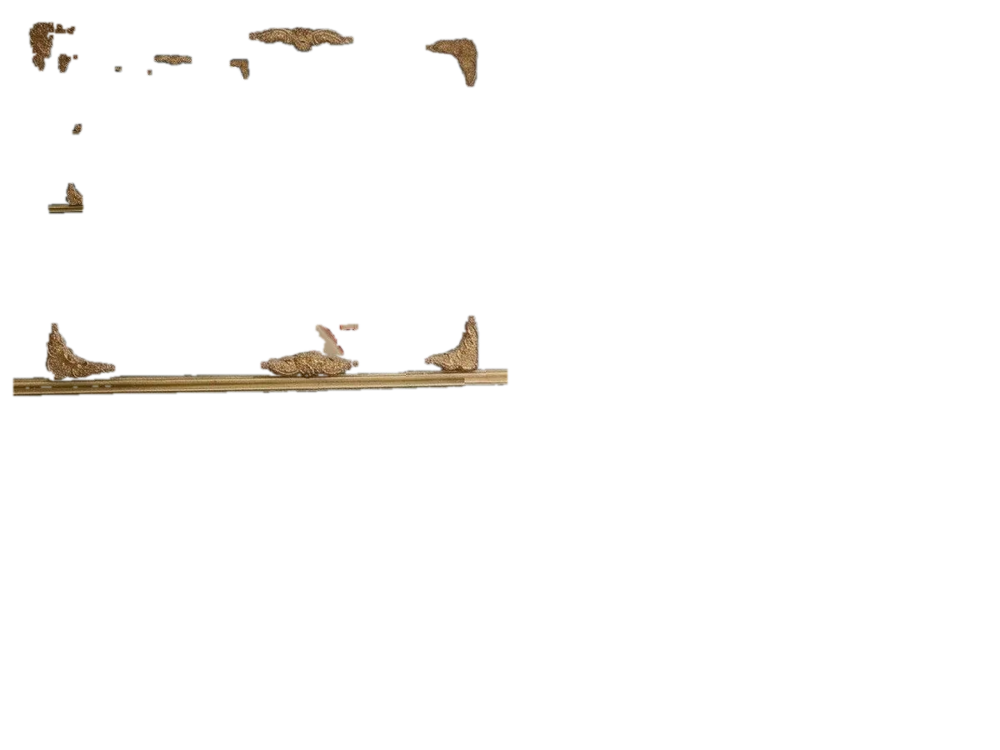
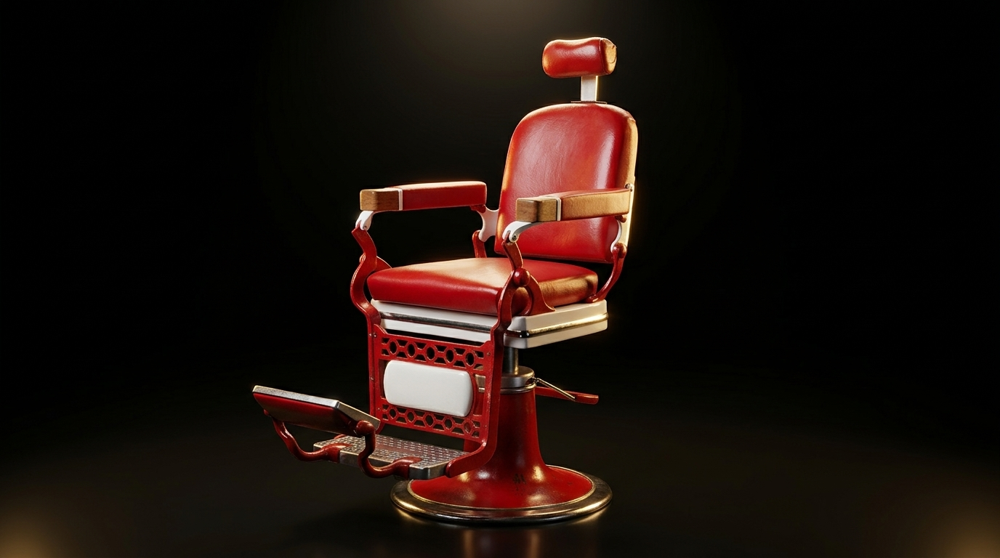
Shave. Cut. Style.
-
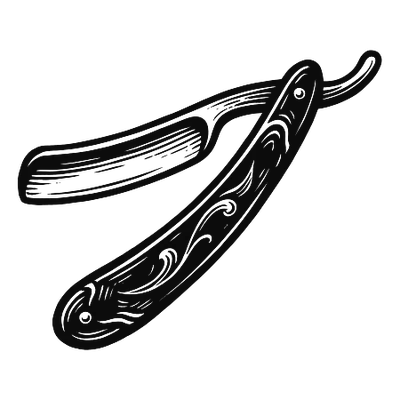
Rasage à la serviette chaude
Barbe aux lames, savon de Marseille et coupe. 45 min
55 $ -
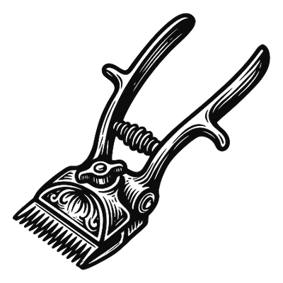
Skin fade ou coupe actuelle
30 min
35 $ -
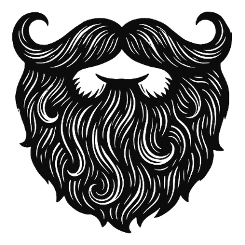
Taille de barbe à la lame
Contours et serviette chaude. 30 min
30 $ -
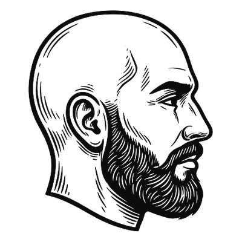
Tête et barbe à la lame
Serviette chaude
50 $
Ado 27 $. Enfant de moins de 12 ans 20 $.
Forces armées et vétérans : 20 % avec la carte. Tous les prix
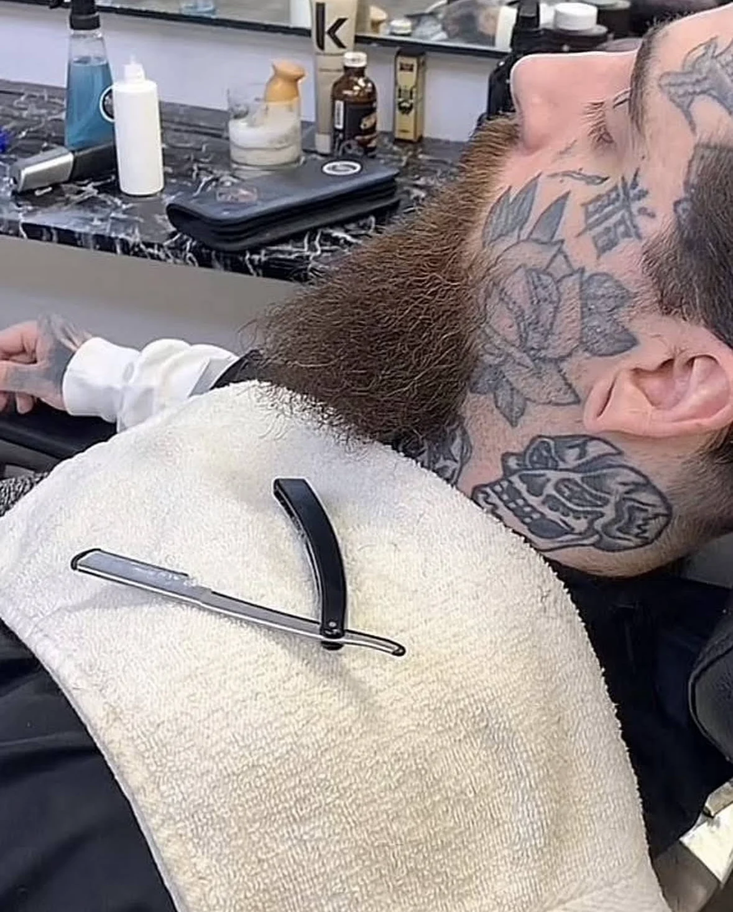
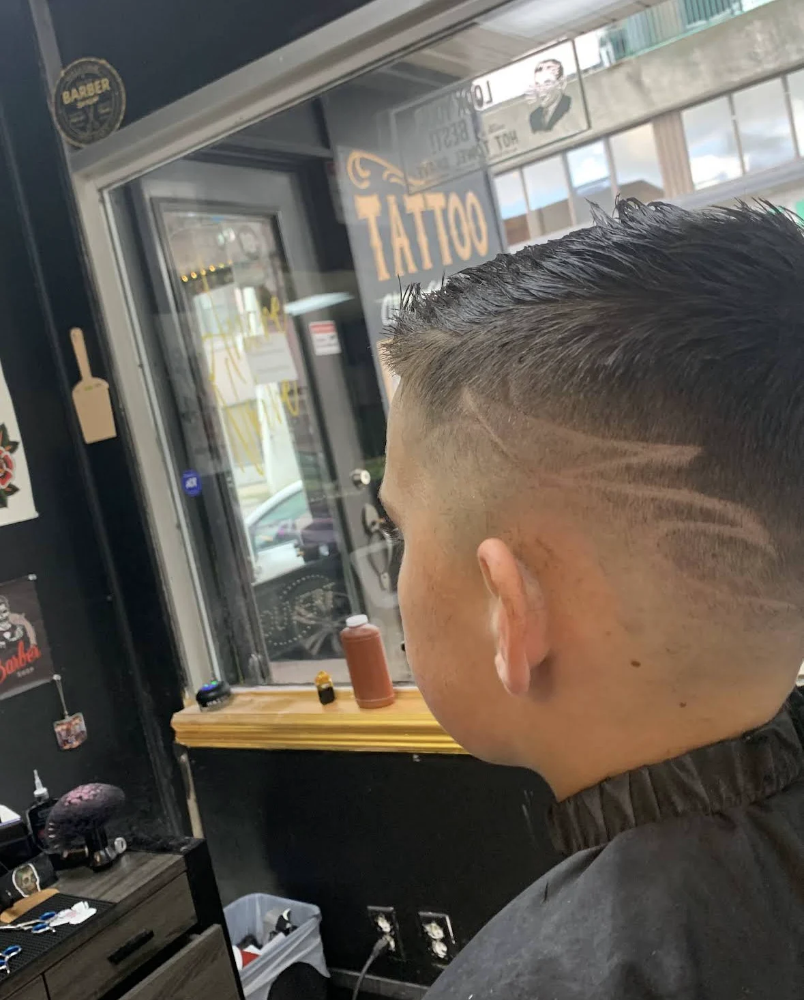
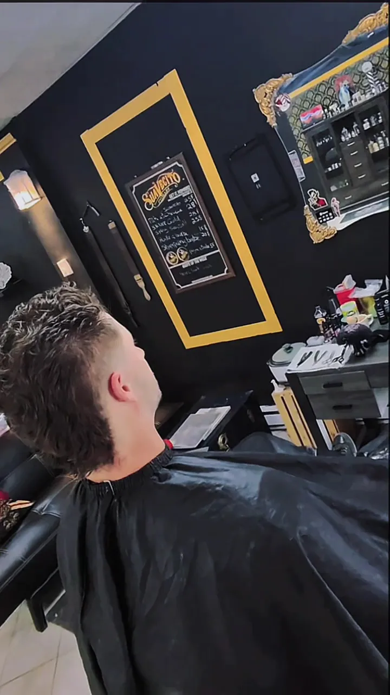
Les avis des clients
5,0sur 5, 32 avis Google
« Meilleur barbier dans la région ! Disponible, à l’écoute, perfectionniste ! »
VLSF
« Meilleur service reçu… J’ai une forte barbe et les conseils qu’il m’a donnés sont toujours impeccables. »
Junior Desaulniers
« Barbier très sympathique et minutieux ! Très beau salon aussi ! »
Steven Dery
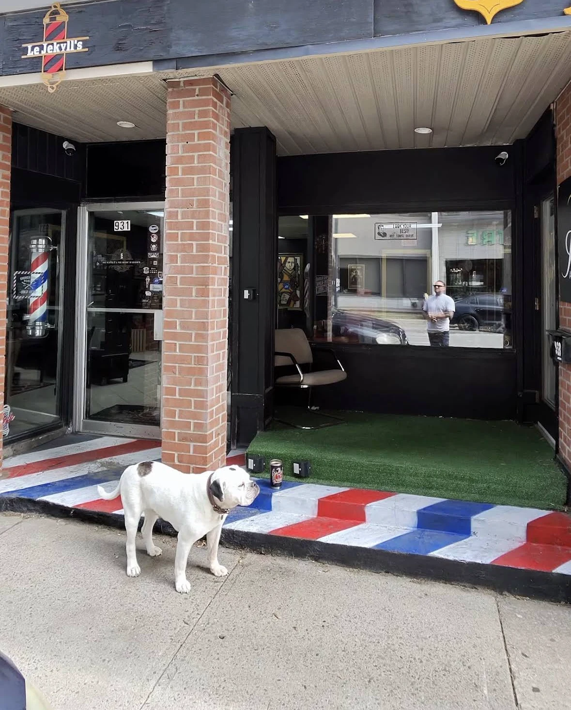
Un salon, rue Royale
933, rue Royale
Centre-ville de Trois-Rivières (Québec) G9A 4H7
Ouvre à 13 h le mardi.
Le Jekyll’s
Ici, la tradition coupe toujours juste.
Réserver en ligne